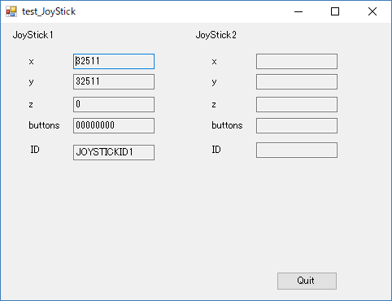

C# でジョイスティックを使う方法について記載します。
[概要]
まずは動かしてみます。
[環境]
こんな感じのテストプログラムを作成してみます。

["Joystick.cs"]
using System;
using System.Collections.Generic;
using System.Linq;
using System.Text;
using System.Runtime.InteropServices;
namespace JoyStickController
{
public enum JOYSTICK_ID
{
JOYSTICKID1 = 0,
JOYSTICKID2 = 1,
JOYSTICKID3 = 2,
JOYSTICKID4 = 3,
JOYSTICKID5 = 4,
JOYSTICKID6 = 5,
JOYSTICKID7 = 6,
JOYSTICKID8 = 7,
JOYSTICKID9 = 8,
JOYSTICKID10 = 9,
JOYSTICKID11 = 10,
JOYSTICKID12 = 11,
JOYSTICKID13 = 12,
JOYSTICKID14 = 13,
JOYSTICKID15 = 14,
JOYSTICKID16 = 15
}
[StructLayout(LayoutKind.Sequential)]
public struct JOYINFO
{
public uint dwXpos;
public uint dwYpos;
public uint dwZpos;
public uint dwButtons;
}
[StructLayout(LayoutKind.Sequential)]
public struct JOYINFOEX
{
public uint dwSize;
public uint dwFlags;
public uint dwXpos;
public uint dwYpos;
public uint dwZpos;
public uint dwRpos;
public uint dwUpos;
public uint dwVpos;
public uint dwButtons;
public uint dwButtonNumber;
public uint dwPOV;
public uint dwReserved1;
public uint dwReserved2;
}
public enum MMRESULT : uint
{
JOYERR_NOERROR = 0,
MMSYSERR_NOERROR = 0,
MMSYSERR_ERROR = 1,
MMSYSERR_BADDEVICEID = 2,
MMSYSERR_NOTENABLED = 3,
MMSYSERR_ALLOCATED = 4,
MMSYSERR_INVALHANDLE = 5,
MMSYSERR_NODRIVER = 6,
MMSYSERR_NOMEM = 7,
MMSYSERR_NOTSUPPORTED = 8,
MMSYSERR_BADERRNUM = 9,
MMSYSERR_INVALFLAG = 10,
MMSYSERR_INVALPARAM = 11,
MMSYSERR_HANDLEBUSY = 12,
MMSYSERR_INVALIDALIAS = 13,
MMSYSERR_BADDB = 14,
MMSYSERR_KEYNOTFOUND = 15,
MMSYSERR_READERROR = 16,
MMSYSERR_WRITEERROR = 17,
MMSYSERR_DELETEERROR = 18,
MMSYSERR_VALNOTFOUND = 19,
MMSYSERR_NODRIVERCB = 20,
WAVERR_BADFORMAT = 32,
WAVERR_STILLPLAYING = 33,
WAVERR_UNPREPARED = 34,
JOYERR_PARMS = NativeMethods.JOYERR_PARMS, //!< 165: 指定されたジョイスティックＩＤは無効
JOYERR_UNPLUGGED = NativeMethods.JOYERR_UNPLUGGED //!< 167: 指定されたジョイスティックが接続されていない
}
public class JoyStick
{
private JOYINFO _pji;
private JOYINFOEX _pjiex;
private MMRESULT _mmresult;
public JoyStick(JOYSTICK_ID joystick_id)
{
_pji = new JOYINFO();
_pjiex = new JOYINFOEX();
JoystickId = joystick_id;
}
public JOYSTICK_ID JoystickId { get; }
private MMRESULT GetPos(uint uJoyID, ref JOYINFO pji)
{
return NativeMethods.joyGetPos(uJoyID, ref pji);
}
private MMRESULT GetPosEx(uint uJoyID, ref JOYINFOEX pjiex)
{
return NativeMethods.joyGetPosEx(uJoyID, ref pjiex);
}
public JOYINFO GetPos()
{
_mmresult = GetPos((uint)JoystickId, ref _pji);
return _pji;
}
public JOYINFOEX GetPosEx()
{
_pjiex.dwSize = (uint)Marshal.SizeOf(_pjiex);
_pjiex.dwFlags = NativeMethods.JOY_RETURNALL;
_mmresult = GetPosEx((uint)JoystickId, ref _pjiex);
return _pjiex;
}
public static MMRESULT JoyConfigChanged()
{
return NativeMethods.joyConfigChanged(0);
}
public MMRESULT GetMMRESULT()
{
return _mmresult;
}
}
internal static class NativeMethods
{
#pragma warning disable IDE1006 // 命名スタイル
[DllImport("winmm.dll")]
public static extern uint joyGetNumDevs();
[DllImport("winmm.dll")]
public static extern MMRESULT joyGetPos(uint uJoyID, ref JOYINFO pji);
[DllImport("winmm.dll"), System.Security.SuppressUnmanagedCodeSecurity]
public static extern MMRESULT joyGetPosEx(uint uJoyID, ref JOYINFOEX pjiex);
[DllImport("winmm.dll")]
public static extern MMRESULT joyConfigChanged(uint dwFlags);
#pragma warning restore IDE1006 // 命名スタイル
public static UInt32 JOY_RETURNX = 0x00000001;
public static UInt32 JOY_RETURNY = 0x00000002;
public static UInt32 JOY_RETURNZ = 0x00000004;
public static UInt32 JOY_RETURNR = 0x00000008;
public static UInt32 JOY_RETURNU = 0x00000010;
public static UInt32 JOY_RETURNV = 0x00000020;
public static UInt32 JOY_RETURNPOV = 0x00000040;
public static UInt32 JOY_RETURNBUTTONS = 0x00000080;
public static UInt32 JOY_RETURNALL = (JOY_RETURNX | JOY_RETURNY | JOY_RETURNZ | JOY_RETURNR | JOY_RETURNU | JOY_RETURNV | JOY_RETURNPOV | JOY_RETURNBUTTONS);
public const int JOYERR_BASE = 160;
public const int JOYERR_PARMS = (JOYERR_BASE + 5); //!< 指定されたジョイスティックＩＤは無効
public const int JOYERR_UNPLUGGED = (JOYERR_BASE + 7); //!< 指定されたジョイスティックが接続されていない
public const int MMSYSERR_BASE = 0;
public const int MMSYSERR_BADDEVICEID = (MMSYSERR_BASE + 2);
public const int MMSYSERR_INVALPARAM = (MMSYSERR_BASE + 11);
}
}
["Form1.cs"]
using JoyStickController;
using System;
using System.Windows.Forms;
namespace test_JoyStick
{
public partial class Form1 : Form
{
private JoyStick _joyStick1 = new JoyStick(JOYSTICK_ID.JOYSTICKID1);
private JoyStick _joyStick2 = new JoyStick(JOYSTICK_ID.JOYSTICKID2);
public Form1()
{
InitializeComponent();
}
private void Timer1_Tick(object sender, EventArgs e)
{
// JoyStick 1
{
JOYINFOEX joyInfoEx1 = _joyStick1.GetPosEx();
if (_joyStick1.GetMMRESULT() == MMRESULT.JOYERR_NOERROR) {
tb_x_1.Text = joyInfoEx1.dwXpos.ToString();
tb_y_1.Text = joyInfoEx1.dwYpos.ToString();
tb_z_1.Text = joyInfoEx1.dwZpos.ToString();
tb_buttons_1.Text = joyInfoEx1.dwButtons.ToString("X8");
tb_JoyStick1_ID.Text = (_joyStick1.JoystickId).ToString();
}
else
{
if (tb_x_1.Text != "")
{
JoyStick.JoyConfigChanged();
}
tb_x_1.Text = "";
tb_y_1.Text = "";
tb_z_1.Text = "";
tb_buttons_1.Text = "";
tb_JoyStick1_ID.Text = "";
}
}
// JoyStick 2
{
JOYINFOEX joyInfoEx2 = _joyStick2.GetPosEx();
if (_joyStick2.GetMMRESULT() == MMRESULT.JOYERR_NOERROR)
{
tb_x_2.Text = joyInfoEx2.dwXpos.ToString();
tb_y_2.Text = joyInfoEx2.dwYpos.ToString();
tb_z_2.Text = joyInfoEx2.dwZpos.ToString();
tb_buttons_2.Text = joyInfoEx2.dwButtons.ToString("X8");
tb_JoyStick2_ID.Text = (_joyStick2.JoystickId).ToString();
}
else
{
if (tb_x_2.Text != "")
{
JoyStick.JoyConfigChanged();
}
tb_x_2.Text = "";
tb_y_2.Text = "";
tb_z_2.Text = "";
tb_buttons_2.Text = "";
tb_JoyStick2_ID.Text = "";
}
}
}
private void Button1_Click(object sender, EventArgs e)
{
Close();
}
}
}
サンプルプログラム ダウンロード
記載：
2018年05月19日 新規作成、木下英俊